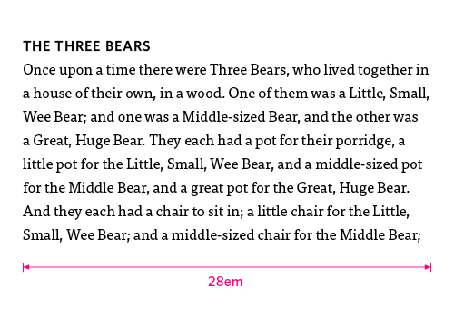
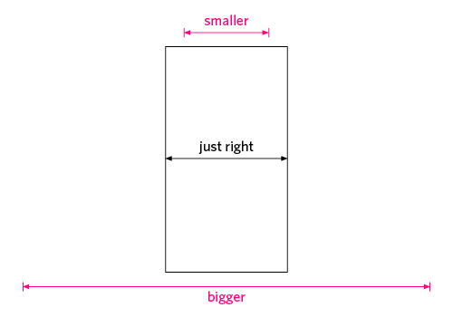
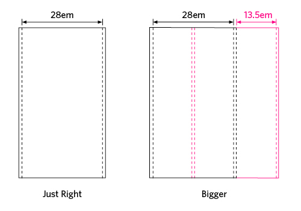
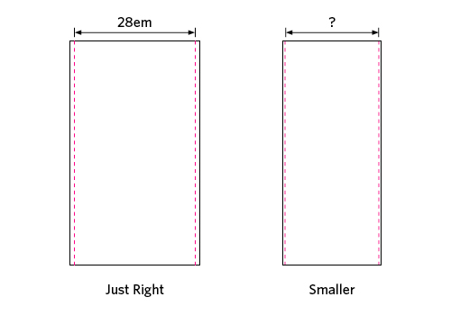

The Goldilocks Approach to Responsive Web Design
With over 4 billion mobile devices in use around the world, mobile browsing is rising fast. We can no longer assume that our sites will be viewed on a desktop monitor with an average resolution. Perhaps we never could.
The answer, proposed by Ethan Marcotte, is Responsive Web Design. Instead of building separate sites for each device, we build one site that adapts to each device. However, the current approach to responsive design is still based on a few popular devices and, as a result, is likely to become obsolete as fast as they do.
What if we could create a truly universal design that was device independent – one that, no matter what device you viewed it on, looked like it was designed just for that device? At New Adventures, Mark Boulton talked about designing from the content out, rather than the canvas in, and we think this makes good sense. Perhaps the only way to create a design that will work on any device is to forget about the device altogether.
Current Practice
The current approach to responsive design binds the design to the device. It uses pixel widths based on the dimensions of the most common devices, but we don’t think this approach is good enough. It results in designs that are based on two big inconstants:
- device resolution; and,
- pixels.
Device resolution
There are thousands of different devices out there, with millions of potential contexts. We can’t support them all, so we end up choosing a few popular devices, basing our designs on their resolutions, and ignoring the rest of the products on the market. When technology moves on and resolutions increase, our sites will look as outdated as a 600×400 site does now.
Pixels
Pixels sizes aren’t constant – or at least the display of them isn’t. 16px text on an iPhone can be ~60% the size of 16px text on a Macbook. Basing designs on pixel measurements creates inconsistency in viewing size across devices and can negatively affect readability and usability.
The Device Doesn’t Matter
So how do we do as Mark Boulton suggests and go about designing from the content out? In practice, it means starting with the most common form of content, the paragraph element, and building up to a full layout.
It’s tempting to first set the body font size. But the manufacturer or the user has already set the browser’s default size for readability, and we don’t think you should mess with it without good reason.
However, if you base your entire design on this base font size (using ems), then as it increases or decreases, so will your design. Using ems allows your designs to be resolution independent.

Next, use max-width to set the line length of the paragraph to be as readable as possible (~66 characters per line). This will vary from font to font, but something around 30em usually does the trick. This sets the width of your single column layout, making it ‘just right’ for readability.
The Goldilocks Approach
Now, no matter which device your design is viewed in, the space available will be bigger, smaller, or just right, and you can use media queries to make the most of it.

Too big
If there is substantially more space than the single column width, then you can consider moving to a multi-column layout. For example, if the single column width is 28em (plus 1em margin on either side), and the screen width is more than 45em, then you have enough room to move to a three-column layout with 13.5em columns and 1em gutters, with the main content spanning two columns (so remaining the optimum width for readability).

Too small
If there’s less space than what’s required for optimum readability, then you need to make the most of the space you have. For example:
- halving the outer margin (but not removing it); and/or
- bringing any hanging punctuation inline (so it isn’t cut off).

Just right
If the space available is just right for your single column, then you’ve nothing to worry about. Your work here is done. Go make a cup of tea.
We’re not saying that a single column layout is the best layout for every site. We don’t know which layout a user will be viewing, so our sites need to work just as well in a single column state as they do with multiple columns. However, in practice, we’ve found that it helps to get the single column state right and then work up or down.
The Perks
We think this approach has a quite a few benefits.
With the current approach, even if you only designed for Apple devices (lucky!), you would require up to five different states:
- iMac (large display)
- Macbook (smaller display)
- iPad (tablet – could be portrait or landscape)
- iPhone 4 (Retina)
- iPhone (non-retina).
The Edenspiekermann site seems to take this approach and does it very well, but it’s just not a scalable solution. With the Goldilocks approach, you only have to consider three states:
- multi column (too big)
- narrow column (too small)
- single column (just right).
By taking the device resolution out of the equation, you get layouts that should work across all devices and contexts, even ones that haven’t been invented yet. If, for whatever reason, a user has their base font size set to 80px, then this approach should still produce an appropriate layout for the space available. Talk about device independence.
And finally, technology changes, but the human body has stayed pretty constant for the past few thousand years. By designing for human constraints (readability) rather than technological constraints (device size and resolution), your layouts won’t date any time soon.
And so the designers lived happily ever after…
Responsive design requires a new way of thinking, and there’s still plenty of discussion and exploration to be had before we can settle on what is ‘best practice’. We’ve found this approach to work well for us, but how do you think it would work for you?